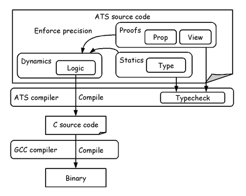

Japan ATS User Group (JATS-UG)は、日本における ATS言語 の利用促進と、日本語での情報交換を目的としたユーザーグループです。 主な活動として ATS言語に関するドキュメント を公開しています。
ATS言語とは
やわらかい説明
ATS言語のプログラムは大きく3つの要素から成り立っています。 動的な世界(Dynamics)、静的な世界(Statics)、証明の世界(Proofs)です。 動的な世界は通常のプログラミング言語と同じ実際に実行されるロジックです。動的な世界はATSコンパイラによってC言語に変換され、GCCによって実行バイナリになります。 静的な世界はHaskellやOCamlのような型推論を持つ言語における型のことです。 静的な世界はは実行時エラーを防ぐ目的で、型の力で動的な世界を制約します。 証明の世界は依存型(Prop)と線形型(View)に分類できます。 依存型はCoqのような証明器として使うことができ、動的な世界のロジックに証明を与えることができます。 線形型はリソースを取り扱うことができ、例えばGCに頼らない動的な世界によるメモリ領域の管理を安全に行なうことができます。 動的な世界はコンパイルされて実行バイナリになりましたが、静的な世界と証明の世界はATSによるコンパイル時に評価(型検査)され、実行バイナリにはなりません。 しかし、静的な世界と証明の世界の検査に失敗すると、動的な世界のコンパイルも中止されます。これが「静的な世界と証明の世界は動的な世界を制約する」という意味です。
この制約による安全性の担保はプログラマの力に頼っています。もしプログラマが動的な世界だけを使ってATSプログラミングを行なったら、C言語と同等の安全性しか手に入りません。 プログラマが静的な世界と証明の世界を駆使して制約を強めれば強めるほど、動的な世界の安全性は強固なものになります。 これはプログラマを中心にすえたプログラムの検証方法で、 定理証明によるプログラミング(PwTP)と呼ばれます。
硬い説明
(以下の説明はATS本家トップページ http://www.ats-lang.org/ の翻訳です。)
ATS言語は静的型付けのプログラミング言語で、形式的な仕様で統一されています。 Applied Type Systemフレームワークを基礎とする表現力豊かな型システムを持ち、 またそれは言語の名前にもなっています。 具体的には依存型と線形型をATSでは使うことができます。
ATS2 (ATS/Postiats) の今の実装は ATS1 (ATS/Anairiats) で設計されています。 ATSは時間効率と空間効率についてC/C++言語と同じくらい効率的です。 (具体的には The Computer Language Benchmarks Game を見てください) また多様なプログラミングパラダイムをサポートしています。
- 関数型プログラミング: ATSのコアは即時評価(call-by-value)の関数型言語です。 遅延評価(call-by-need)も提供しています。 ATSにおける線形型は主にC言語と比較しても遜色ない効率の関数型プログラムを書くことに利用されますが、 同様にC言語と比較しても遜色なく小さなフットプリントを実現するためにも利用されます。
- 命令型プログラミング: ATSの命令型プログラミングに対するユニークなアプローチは 定理証明によるプログラミング のパラダイムを基礎としています。 ATSの型システムは他の言語では危険であると考えらえている多くの機能を安全に提供します。 (例えば、明示的なポインタ演算や明示的なメモリの取得/解放などです) これはATSを使った実用的な低レイヤーのシステムプログラミングを可能にします。
- 並列プログラミング: マルチコアセーフなGC実装を備えているため、 ATSはpthreadを使ったマルチスレッドプログラミングをサポートできます。 リソースに対する追跡と安全な操作に線形型を利用することで、 マルチコアアーキティクチャを生かした信頼性の高いプログラムを作成できます。
- モジュラープログラミング: ATSのモジュールシステムはModula-3の影響を大きく受けています。 それはシンプルで総称的で、 同時に大規模なプログラミングをサポートするのに効果的です。
その上に、ATSはATS/LFというサブシステムを含んでいます。 これは全域関数を使って構築された証明について、対話的な定理証明をサポートします。 これによってATSは、プログラミングと定理証明を構文によって組み合わせて、 プログラムの検証に対してプログラマ中心のアプローチを提供します。 さらに、このサブシステムは演繹をエンコードするシステムとそれらのメタな性質のための論理フレームワークとしての役目を果たします。
利点
- ATSは現実的なプログラミングの正確さを強化できます。
- ATSでは効率的な関数型プログラミングをすることができます。 にもかかわらず生のアンボックス化されたデータ表現を直接操作できます。
- ATSの線形型を使うことでプログラムのメモリのフットプリントを削減できます。
- ATSでは証明器を使うことでプログラマがプログラムの安全性と効率を向上させることができます。
- ATSを使えばOSのkernelのような低レイヤーのコードを安全に書くことができます。
- ATSは型理論を教えたり、高品質なソフトウェアを構築する際の型の力と可能性を教えるのを助けます。
最初の一歩
なにはともあれ使ってみましょう。
1. ダウンロード
http://sourceforge.net/projects/ats2-lang/files/ と http://sourceforge.net/projects/ats2-lang-contrib/files/ から最新バージョンのATS2-PostiatsとATS2-Postiats-contribをダウンロードしてください。
2. インストール
ダウンロードしたATS2-Postiatsをコンパイルして、/usr/local以下にインストールします。
$ tar xf ATS2-Postiats-0.0.7.tgz
$ cd ATS2-Postiats-0.0.7
$ ./configure
$ make
$ sudo make install
$ which patscc
/usr/local/bin/patscc
ATS2-PostiatsをインストールしたディレクトリにATS2-Postiats-contribをコピーします。
$ tar xf ATS2-Postiats-contrib-0.0.7.tgz
$ cp -r ATS2-Postiats-contrib-0.0.7/contrib /usr/local/lib/ats2-postiats-0.0.7/
$ export PATSHOME=/usr/local/lib/ats2-postiats-0.0.7
$ export PATSHOMERELOC=$PATSHOME
3. コンパイル
Hello Worldプログラムをコンパイルして動かしましょう。
$ vi hello.dats
implement main0 () = println! ("Hello world!")
$ patscc -o hello hello.dats
$ ls
hello hello.dats hello_dats.c
$ ./hello
Hello world!
ドキュメント
JATS-UGではATS言語に関するドキュメントを公開しています。
翻訳
ATS言語に関する英語記事の翻訳です。 https://github.com/jats-ug/translate からお読み下さい。主な翻訳文書へのリンクを紹介します。
- ATSプログラミング入門
- ATSプログラミングチュートリアル
- Effective ATS
- MLプログラマ向けATS言語ガイド
- WebにあるATS言語に関する記事の日本語訳
- ATS言語に関する論文の日本語訳
- 用語辞書
また、翻訳作業に参加していただけるボランティアも募集しています。
ライセンス
JATS-UGロゴは Copyright (c) 2011 Otakumunidad Damned で Creative Commons Attribution 2.0 Generic License の条件の下でリリースされます。

{kind=link}